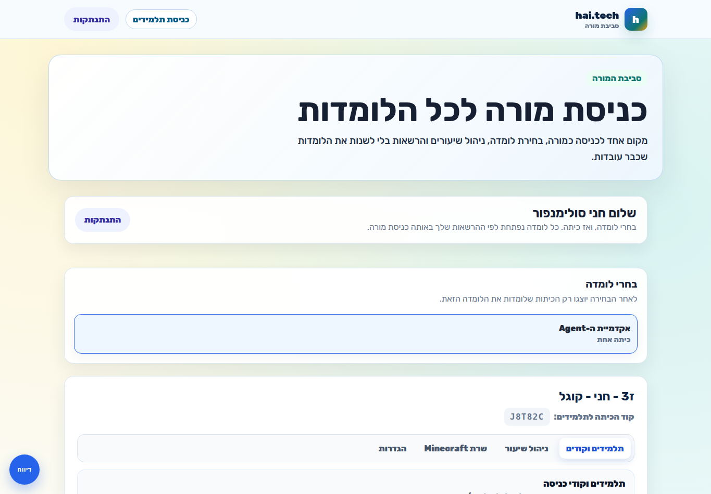
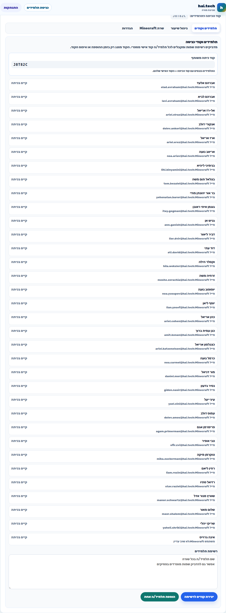
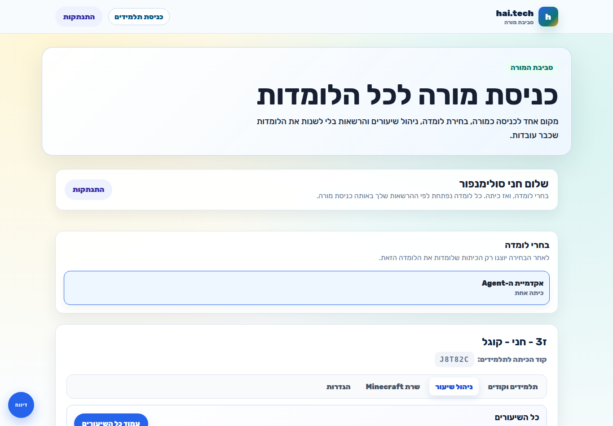
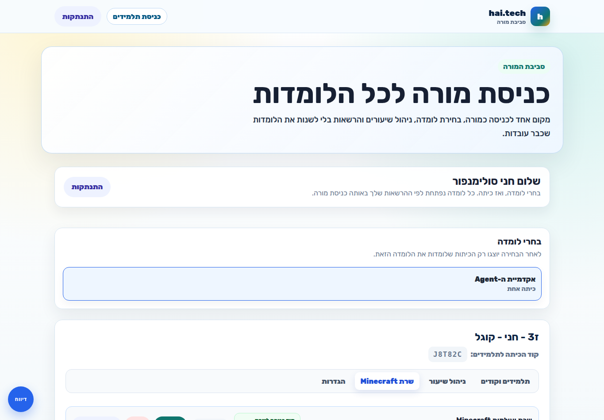
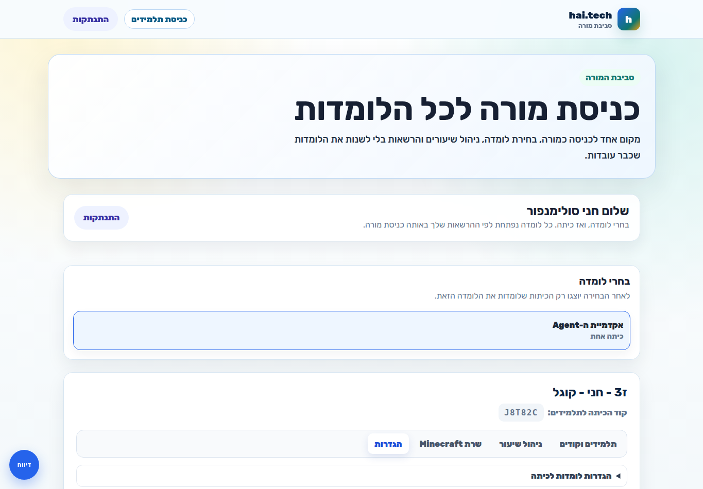
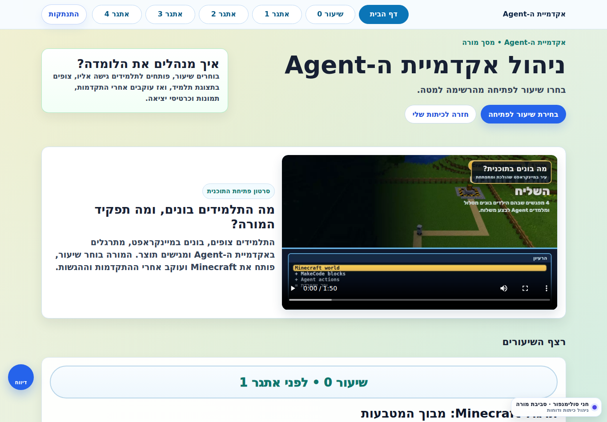
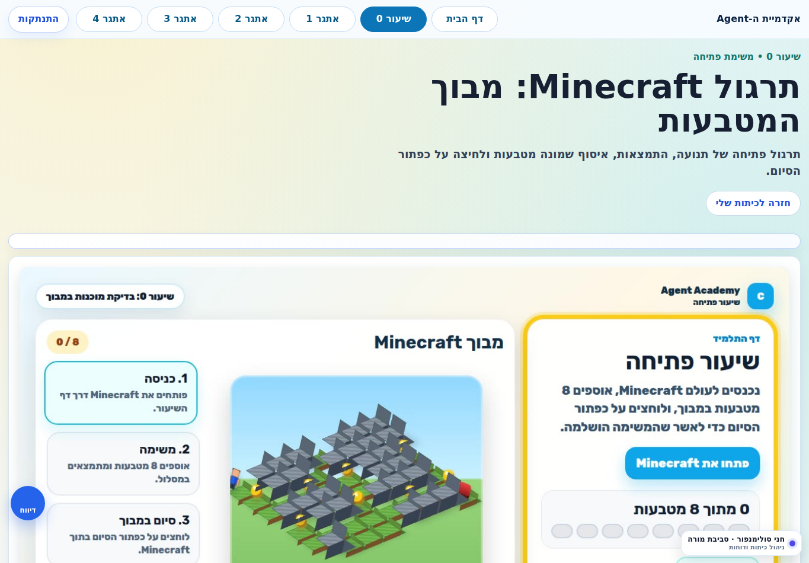
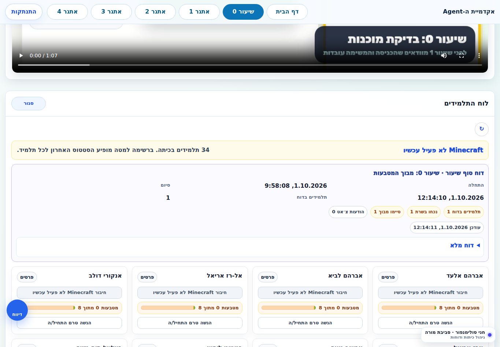
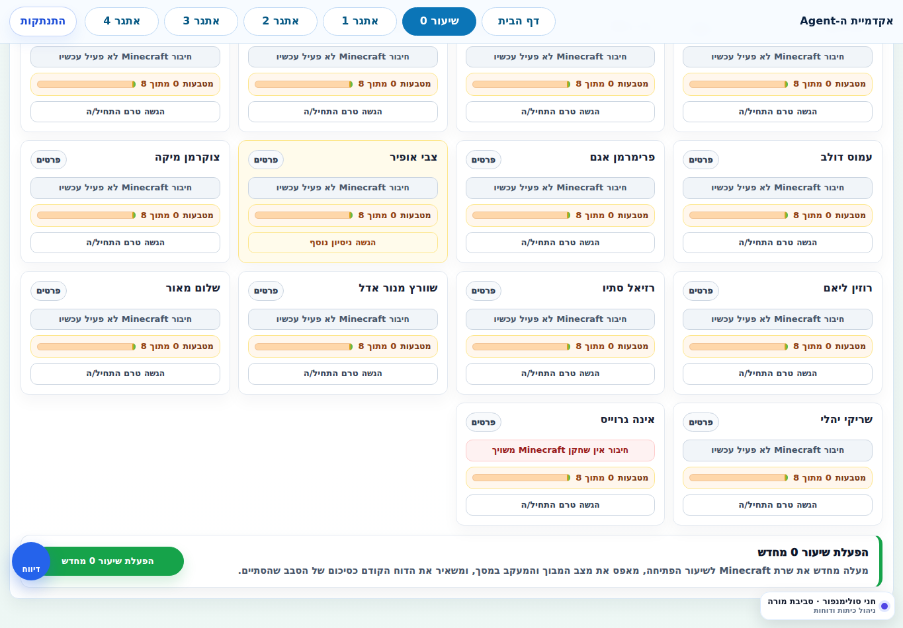
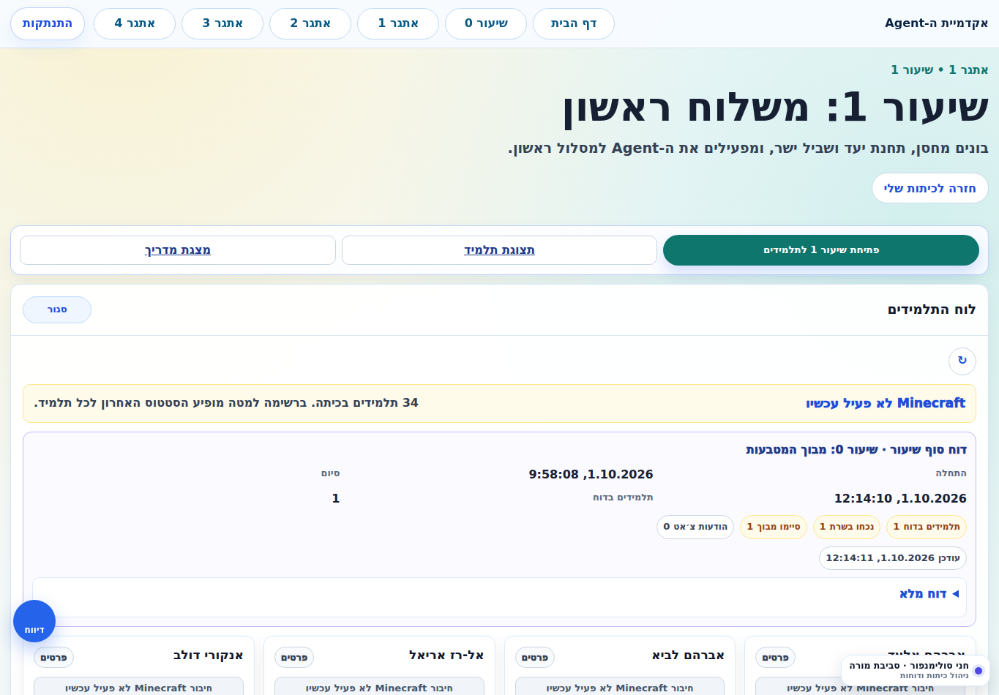

דרך ההייטק · אקדמיית ה-Agent
מדריך שימוש למורה
לפי המסך האמיתי של חני
מסמך קצר ללמי ושרית. הכיתה והתלמידים כבר מוכנים, לכן המסמך מתמקד רק בעבודה בשיעור: בחירת הכיתה, פתיחת שיעור 0, מעקב, דוח, הפעלה מחדש ושיעורי Agent.
מה המורה עושה בפועל
המורה לא מקימה כיתה ולא יוצרת תלמידים. היא נכנסת למסך המורה, בוחרת את הכיתה המוכנה, מנהלת את שיעור 0 ואת Minecraft, ועוקבת אחרי התלמידים והדוחות.
אם חסר תלמיד, משתמש Minecraft או הרשאה, זה לא משהו שלמי ושרית צריכות לתקן בזמן שיעור. מעבירים לאחראית המערכת.
1. מסך המורה של חני
אחרי כניסה, חני רואה את הלומדה “אקדמיית ה-Agent” ואת הכיתה המוכנה שלה: “ז3 - חני - קוגל”.

2. כרטיס הכיתה המוכנה
כרטיס הכיתה כולל את קוד הכיתה, תלמידים, קודי כניסה, ניהול שיעור, שרת Minecraft והגדרות.
למי ושרית לא צריכות להשתמש בהוספת תלמידים או יצירת קודים, כי הכיתה כבר מוכנה.

3. הלשונית “תלמידים וקודים”
בלשונית הזאת רואים את קוד הכיתה ואת רשימת התלמידים. אצל חני מופיעים שמות התלמידים, מייל Minecraft משויך לכל תלמיד, וסטטוס “קיים בכיתה”.
- המורה יכולה לראות שהתלמידים קיימים בכיתה.
- אפשר לבדוק אם לתלמיד מופיע מייל Minecraft או משתמש Minecraft.
- למי ושרית לא צריכות ליצור קודים או להוסיף תלמידים במסך הזה.
אם תלמיד חסר, או אם אין לו משתמש Minecraft משויך, לא מתקנים את זה בזמן שיעור. מעבירים לאחראית המערכת.

4. הלשונית “ניהול שיעור”
בלשונית הזאת רואים את כל שיעורי אקדמיית ה-Agent. שיעור 0 פתוח תמיד, שיעור 1 הוא הבא לפתיחה, ושאר השיעורים נעולים עד שמגיעים אליהם.
- “עמוד כל השיעורים” פותח את מסך הניהול הרחב של אקדמיית ה-Agent.
- לכל שיעור יש “עמוד השיעור”.
- בשיעורים 1 והלאה מופיע כפתור “הפעלת שיעור” כשהגיע הזמן לפתוח לתלמידים.
זו הלשונית המרכזית לפתיחת שיעור חדש לתלמידים.

5. הלשונית “שרת Minecraft”
בלשונית הזאת רואים את סטטוס שרת Minecraft של הכיתה, כתובת השרת, קוד הכניסה לשרת, והפעולות להדלקה/כיבוי/רענון.
- אצל חני כרגע מופיע: “שרת כבוי לכיתה”.
- מופיעה כתובת השרת: 187.124.181.225:20203.
- מופיע קוד כניסה לשרת: Kugel2026.
- שיעור 0 משתמש בעולם “מבוך המטבעות”.
- שיעור 1 והלאה משתמשים בעולם 50 המתחמים.
כיבוי/הדלקה ידניים עושים רק כשמבינים למה. בזמן שיעור רגיל עדיף לעבוד דרך מסך שיעור 0 או עמוד השיעור.

6. הלשונית “הגדרות”
בלשונית הזאת רואים את הגדרות הלומדות של הכיתה. אצל חני הכיתה כבר מוכנה, ולכן זו לא לשונית של עבודה שוטפת בשיעור.
- אפשר לראות אילו לומדות משויכות לכיתה.
- לא צריך לשנות הרשאות בזמן שיעור.
- אם חסרה לומדה או הרשאה, מעבירים לאחראית המערכת.

7. מסך כל שיעורי אקדמיית ה-Agent
ממסך הכיתה נכנסים לניהול אקדמיית ה-Agent. כאן רואים את רצף השיעורים ואת הכפתורים לניהול כל שיעור.
- שיעור 0 פתוח כברירת מחדל.
- שיעור 1 הוא השיעור הבא לפתיחה.
- אפשר לפתוח שיעור לתלמידים כשמגיעים אליו.

8. שיעור 0 - מבוך המטבעות
בשיעור 0 התלמידים נכנסים לעולם Minecraft, אוספים 8 מטבעות ולוחצים על כפתור הסיום. במסך העליון רואים את תיאור השיעור, ובהמשך הגלילה מופיע לוח התלמידים של המורה.

9. לוח תלמידים ודוח סוף שיעור
אחרי סיום שיעור 0 מופיע דוח סוף שיעור מהמוניטור. אצל חני כבר מופיע דוח: תלמיד אחד נכח וסיים את המבוך, והשרת מוצג כלא פעיל עכשיו.
- בודקים ש-Minecraft לא פעיל בסוף השיעור.
- קוראים את תקציר הדוח.
- אפשר לפתוח “דוח מלא” לפירוט.

10. הפעלת שיעור 0 מחדש
אם כבר יש דוח והשרת כבוי, מופיע בתחתית לוח התלמידים כפתור “הפעלת שיעור 0 מחדש”.
הכפתור מיועד רק למקרה שרוצים לעשות שוב את שיעור 0 לאותה כיתה.
- מעלה מחדש את שרת Minecraft לשיעור 0.
- מנקה את מצב הסבב הקודם מהלוח החי.
- לא פותח את שיעור 1.

11. שיעור 1 והמשך אקדמיית ה-Agent
בשיעור 1 והלאה המורה פותחת שיעור לתלמידים, יכולה לפתוח תצוגת תלמיד, מצגת, ולעקוב אחרי לוח התלמידים.
- נכנסים לשיעור הרלוונטי.
- לוחצים פתיחת שיעור לתלמידים אם צריך.
- מפנים את התלמידים לעבוד בלומדה וב-Minecraft לפי ההוראות.
- עוקבים אחרי ההתקדמות בלוח התלמידים.

צ'קליסט קצר ללמי ושרית
- נכנסתי למסך המורה.
- בחרתי את “אקדמיית ה-Agent”.
- פתחתי את הכיתה הנכונה.
- בשיעור 0 בדקתי אם Minecraft פעיל או כבוי.
- בסוף שיעור 0 לחצתי סיום שיעור.
- וידאתי שהתקבל דוח סוף שיעור.
- אם צריך סבב נוסף, השתמשתי בהפעלת שיעור 0 מחדש.
- בשיעורים הבאים פתחתי את השיעור הרלוונטי לתלמידים.
לא עורכים תלמידים, לא מנפיקים קודים ולא משנים הרשאות בזמן שיעור. אם משהו חסר, מעבירים לתמיכה.